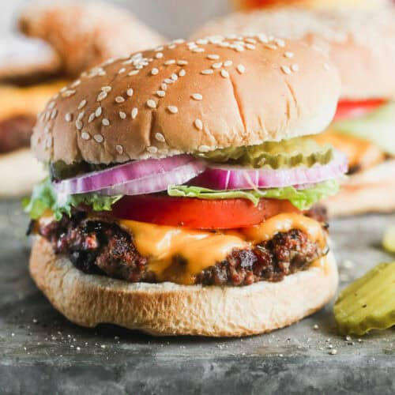

Hamburger

Description
An easy Hamburger recipe that is juicy, tender, and restaurant-worthy! It's made with ground chuck and has the best burger seasoning, piled high with your favorite toppings. Check out all my tips for the perfect burgers!
Ingredients
- 1 ½ pounds ground chuck* , (80/20)
- 1 1/2 teaspoons freshly ground black pepper
- 1 teaspoon salt
- 2 teaspoon paprika
- 1/2 teaspoon light brown sugar
- 1/4 teaspoon garlic powder
- 1/4 teaspoon onion powder
- 1/4 teaspoon cayenne pepper
Steps
- Make burger seasoning by combining all spices in a bowl. Set aside.
- Form Patties: Divide ground chuck into 6 equal portions and gently form into ½ inch thick patties that are wider than the burger buns, since the meat will shrink as it cooks. (Don't over-handle the meat, or it will make it tough).
- Indent: Use your thumb to press a gentle indentation into the center of each patty, which will help them cook evenly and not puff up in the center. Cover and set aside while preheating grill. (Ice cube trick: Some chefs will put an ice cube on top of each indentation on the patties until they’re ready to cook, so they don't dry out.)
- Grill: Preheat grill to medium high heat. Just before cooking, sprinkle burger seasoning over the patties, then place on hot grill, indent-side up. Close grill lid and cook for 3-4 minutes, until the bottom of the burger is seared and juices are accumulating on top of the burger. Flip and cook an additional 3-4 minutes, or until the beef reaches 160 degrees F.
- Add cheese on top of burger patties during the last minute of cooking. Remove to a plate and allow to rest for a few minutes before serving on a bun, with desired toppings.